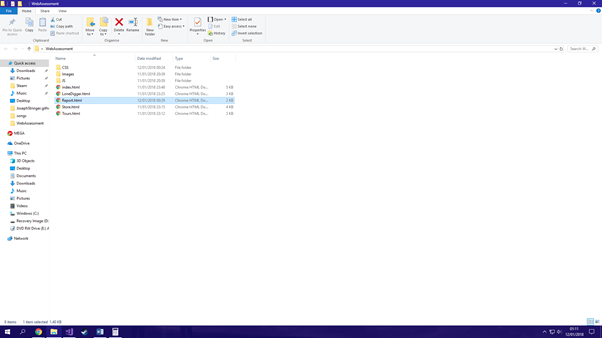
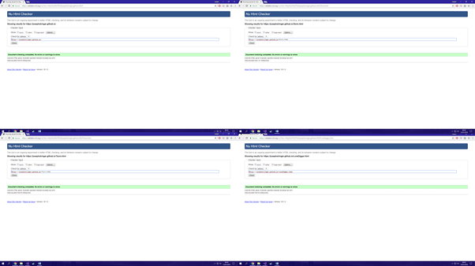
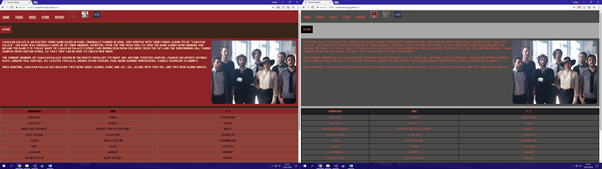
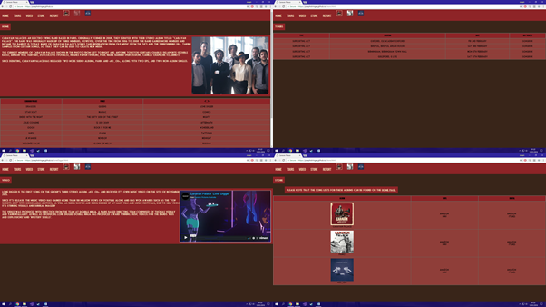
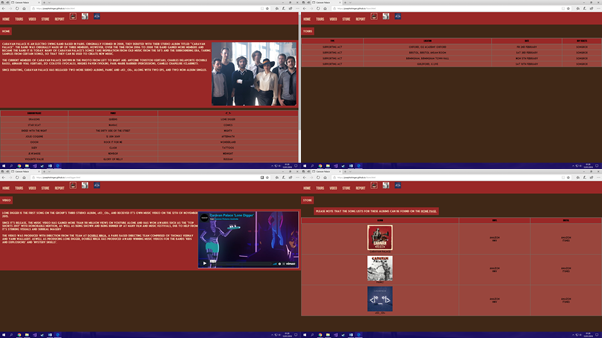
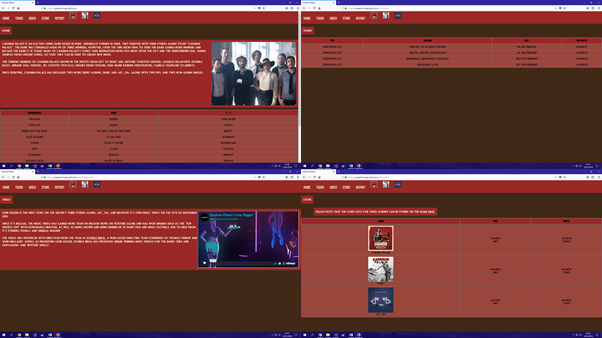
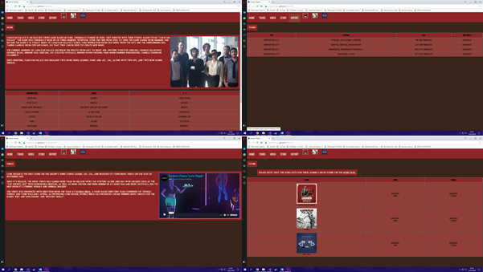

Introduction
For this assignment, we were tasked with creating our own website based around the concept of "Band or Brand". Based on this initial idea I went with designing a website around the French electro-swing band ’Caravan Palace’, as I felt that their unique style would allow for an interesting website. To create this website, I have used a combination of HTML5, CSS3 and JavaScript. These 3 programming languages work well together as they each allowed for focus on different parts of the website, with HTML focussing on the content, CSS focussing on the design and JavaScript focussing on more complicated programming elements.
My File Structure
For a website to function correctly, a well organised file structure is key. This can be achieved by creating a main file, where the HTML documents for the website are kept, and then creating multiple sub-files in order to then store these files. A consistent naming structure is also important when it comes to naming files and folders, as this makes navigation and accessing these files easier in the event that changes need to be made to the website. For my file structure I followed these conventions well, with the start of new words in file names being denoted by a capital letter, however the name of my index page did not follow this convention. The reason for this is GitHub, who I used for my hosting, requires the index page to start with a lower case letter in order to work as a default page
Web Standards
Web standards are a collection of standards that can allow for a website to work across a wide range of different devices, as not all internet users use up-to-date hardware and software. By complying to these standards, this ensures that the widest possible array of users have access to content on a webpage. These standards are typically enforced by the W3C.
I have tried to adhere to these web standards throughout the creation of my website. To check this, I used an online W3C validation tool to make sure that the framework of my website was complying to these standards. Through use of this tool, I was able to remove any potential errors regarding W3C standards that may have been present in my website
Alongside this, I have tried to make my code easy to understand for anyone who may have to edit this. I did this by giving logical classes and ids to element, and I then used these in the CSS in order to create a clear design as well as functionality on my website.
Customizer
As part of the brief, we were tasked with creating a customizer for our website. For my website, I decided that the customizer should allow the user to apply a theme to the website through use of multiple CSS documents. I implemented this feature through use of 3 buttons, which used the covers of the band’s 3 albums to change the CSS of the website through use of JavaScript. If no theme had been selected (for example if it was the users first time visiting the webpage, one of the styles was loaded as a default. Otherwise the user’s selection of style was saved through use of local storage, meaning that the chosen style persisted across pages and sessions.
Compatibility – Chrome
While testing my website I specifically used chrome, so the website was best designed to be compatible with chrome. Upon testing, no issues were found on the website.
Compatibility – Microsoft Edge
Microsoft Edge is the default browser for the Windows operating system, so this means that many people are likely to use the browser, making compatibility very important. Upon testing, no issues were found.
Compatibility – Firefox
Firefox is a popular opensource browser which is compatible with Windows, MacOS and Linux operating systems, meaning a wide range of users may use this browser. Upon testing, no issues were found.
Compatibility – Opera
Opera is a popular browser which, like Firefox, is compatible with Windows, MacOS and Linux operating systems. However, unlike Firefox, this browser is not open source. Upon testing, no issues were found.
Reference List
https://www.youtube.com/watch?v=_XAQH41rjio&ab_channel=AdamKhoury used for changing the CSS through JavaScript.
https://www.youtube.com/watch?v=xMTs8tAapnQ&ab_channel=CalerEdwards used for the media query for the menu becoming a hamburger menu.
https://www.youtube.com/watch?v=iqrlZSUnXMk&ab_channel=EverythingNice used for getting the local storage working.
https://www.w3schools.com/ used in multiple instances throughout the creation of the website.
https://validator.w3.org/ used to validate that the pages were within web standards.